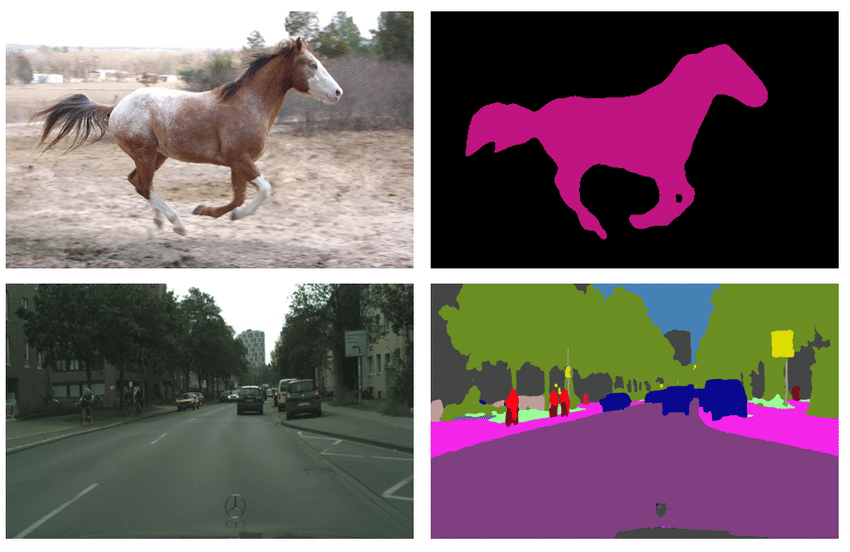

Semantic Segmentation#
Semantic segmentation is a computer vision task in which an algorithm assigns a label or class to each pixel in an image. For example, semantic segmentation can be used to identify the boundaries of different objects in an image, such as cars, buildings, and trees. The output of semantic segmentation is typically an image where each pixel is colored with a different color or label depending on its class.
{kind=link}
We solve this task by utilizing FCN Head with implementation from MMSegmentation on the multi-level image features obtained by the feature extractor backbone (Lite-HRNet). For the supervised training we use the following algorithms components:
Augmentations: Besides basic augmentations like random flip, random rotate and random crop, we use mixing images technique with different photometric distortions.Optimizer: We use Adam optimizer with weight decay set to zero and gradient clipping with maximum quadratic norm equals to 40.Learning rate schedule: For scheduling training process we use ReduceLROnPlateau with linear learning rate warmup for 100 iterations. This method monitors a target metric (in our case we use metric on the validation set) and if no improvement is seen for apatiencenumber of epochs, the learning rate is reduced.Loss function: We use standard Cross Entropy Loss to train a model.Additional training techniquesEarly stopping: To add adaptability to the training pipeline and prevent overfitting.
Dataset Format#
For the dataset handling inside OpenVINO™ Training Extensions, we use Dataset Management Framework (Datumaro).
At this end we support Common Semantic Segmentation data format. If you organized supported dataset format, starting training will be very simple. We just need to pass a path to the root folder and desired model template to start training:
Note
Due to some internal limitations, the dataset should always consist of a “background” label. If your dataset doesn’t have a background label, rename the first label to “background” in the meta.json file.
Note
Currently, metrics with models trained with our OTX dataset adapter can differ from popular benchmarks. To avoid this and train the model on exactly the same segmentation masks as intended by the authors, please, set the parameter use_otx_adapter to False.
Models#
We support the following ready-to-use model templates:
Template ID |
Name |
Complexity (GFLOPs) |
Model size (MB) |
|---|---|---|---|
Lite-HRNet-s-mod2 |
1.44 |
3.2 |
|
Lite-HRNet-18-mod2 |
2.82 |
4.3 |
|
Lite-HRNet-x-mod3 |
9.20 |
5.7 |
|
SegNext-t |
6.07 |
4.23 |
|
SegNext-s |
15.35 |
13.9 |
|
SegNext-b |
32.08 |
27.56 |
All of these models are members of the same Lite-HRNet backbones family. They differ in the trade-off between accuracy and inference/training speed. Lite-HRNet-x-mod3 is the template with heavy-size architecture for accurate predictions but it requires long training.
Whereas the Lite-HRNet-s-mod2 is the lightweight architecture for fast inference and training. It is the best choice for the scenario of a limited amount of data. The Lite-HRNet-18-mod2 model is the middle-sized architecture for the balance between fast inference and training time.
Use SegNext model which can achieve superior perfomance while preserving fast inference and fast training.
In the table below the Dice score on some academic datasets using our supervised pipeline is presented. We use 512x512 image crop resolution, for other hyperparameters, please, refer to the related template. We trained each model with single Nvidia GeForce RTX3090.
Model name |
Mean |
||||
|---|---|---|---|---|---|
Lite-HRNet-s-mod2 |
79.95 |
62.38 |
58.26 |
36.06 |
59.16 |
Lite-HRNet-18-mod2 |
81.12 |
65.04 |
63.48 |
39.14 |
62.20 |
Lite-HRNet-x-mod3 |
79.98 |
59.97 |
61.9 |
41.55 |
60.85 |
SegNext-t |
85.05 |
70.67 |
80.73 |
51.25 |
68.99 |
SegNext-s |
85.62 |
70.91 |
82.31 |
52.94 |
69.82 |
SegNext-b |
87.92 |
76.94 |
85.01 |
55.49 |
73.45 |
Note
Please, refer to our dedicated tutorial for more information on how to train, validate and optimize the semantic segmentation model.